Файлы не увеличивались искусственно. У обработанных мастеров своё исходное разрешение: их версии не выдаются за 4K-оригиналы. Для прочих фотографий сохранены исходные лицензии. Снимки с пометкой «вариант подачи» иллюстрируют сервировку; точный состав — в рецептах. Все изображения загружаются с самого сайта.

Многослойный коктейль со льдом и апельсином — обработка фото пользователя
Авторство: Фотография предоставлена пользователем; автор не указан. Условия: Предоставлено пользователем для оформления сайта.
Обработанный исходник: 1821 × 864 пикселей.
Большая версия сайта: 1821 × 864 пикселей.
Файл заменён пользователем через GitHub; на сайте используется без увеличения разрешения.
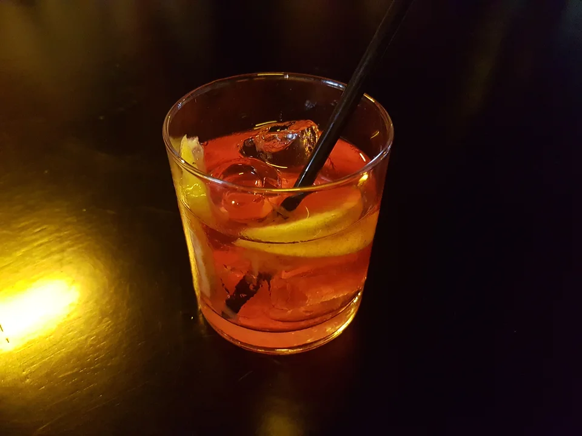
Янтарный Негрони со льдом и цитрусовой цедрой на тёмной барной стойке
Авторство: Фотография предоставлена пользователем; автор не указан. Условия: Предоставлено пользователем для оформления сайта.
Обработанный исходник: 1821 × 864 пикселей.
Большая версия сайта: 1821 × 864 пикселей.
Файл заменён пользователем через GitHub; на сайте используется без увеличения разрешения.
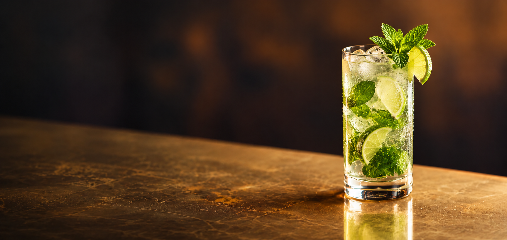
Коктейль Pendennis Club на ножке рядом с бутылками в тёплом барном свете
Авторство: Фотография предоставлена пользователем; автор не указан. Условия: Предоставлено пользователем для оформления сайта.
Обработанный исходник: 1821 × 864 пикселей.
Большая версия сайта: 1821 × 864 пикселей.
Файл заменён пользователем через GitHub; на сайте используется без увеличения разрешения.
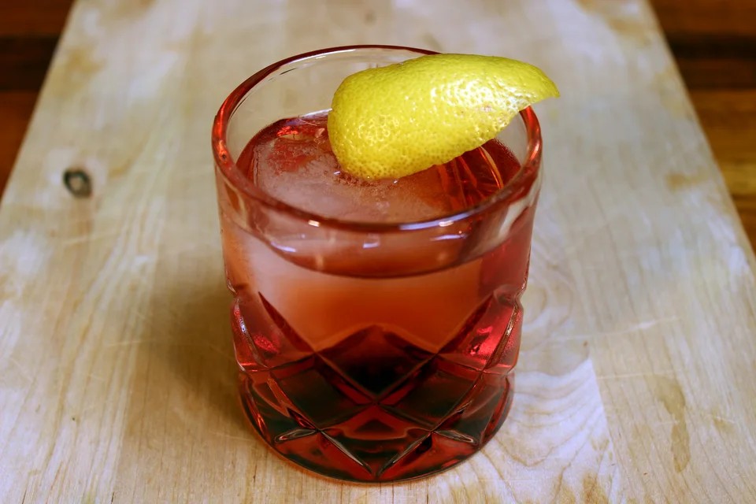
Негрони в низком хрустальном бокале
Авторство: Will Shenton. Условия: CC BY-SA 3.0.
Оригинал фотографии: 5184 × 3456 пикселей.
Большая версия сайта: 3840 × 2560 пикселей.
WebP-конверсия и уменьшение без увеличения исходника; адаптивное кадрирование при показе.

Негрони с апельсиновой цедрой
Авторство: Фотография предоставлена пользователем; автор не указан. Условия: Предоставлено пользователем для оформления сайта.
Обработанный исходник: 1122 × 1402 пикселей.
Большая версия сайта: 1122 × 1402 пикселей.
Файл заменён пользователем через GitHub; подготовлена уменьшенная мобильная версия без увеличения разрешения.
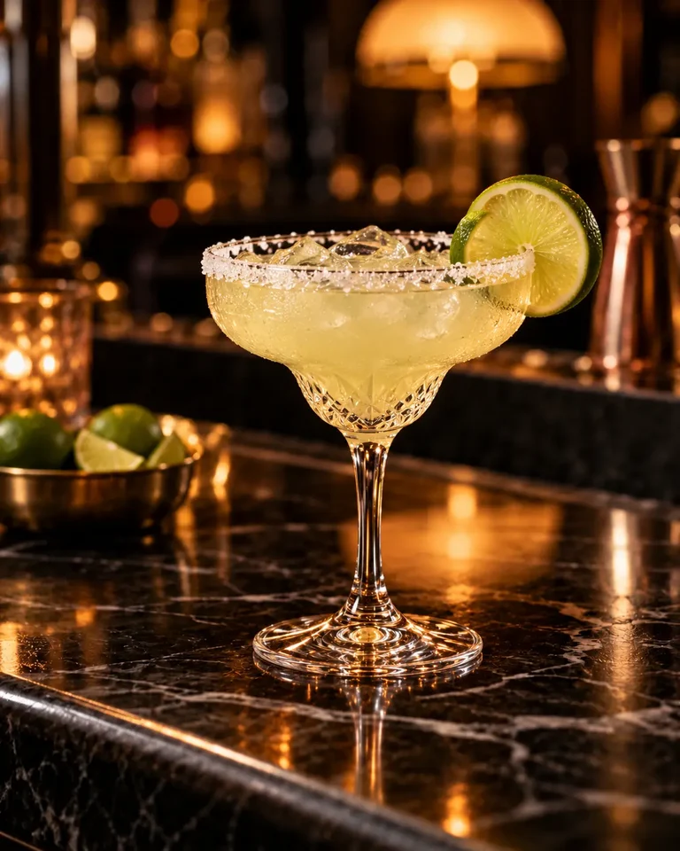
Маргарита с солёным краем бокала
Авторство: Фотография предоставлена пользователем; автор не указан. Условия: Предоставлено пользователем для оформления сайта.
Обработанный исходник: 1122 × 1402 пикселей.
Большая версия сайта: 1122 × 1402 пикселей.
Файл заменён пользователем через GitHub; подготовлена уменьшенная мобильная версия без увеличения разрешения.
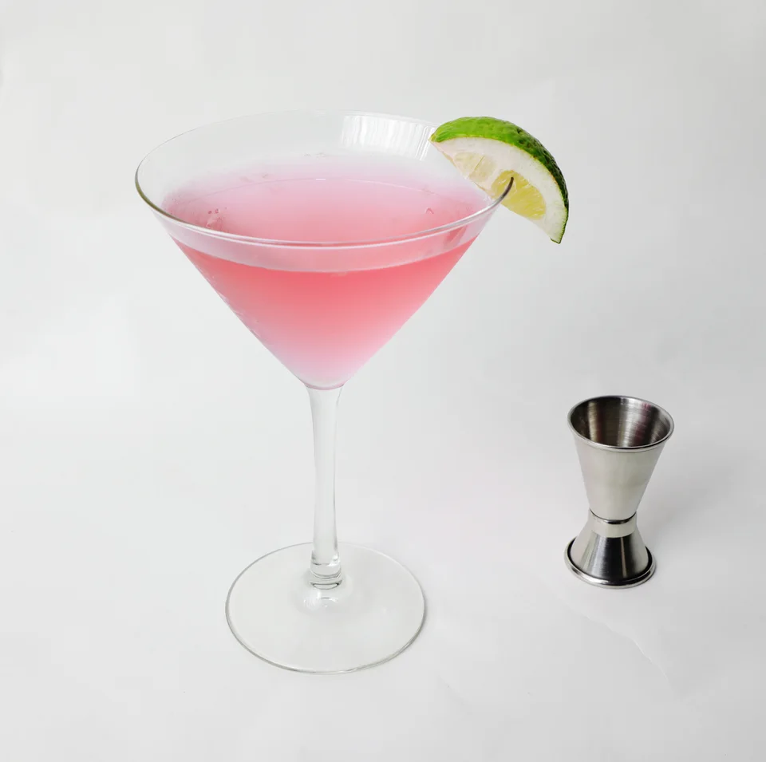
Космополитен в бокале на ножке
Авторство: Фотография предоставлена пользователем; автор не указан. Условия: Предоставлено пользователем для оформления сайта.
Обработанный исходник: 1122 × 1402 пикселей.
Большая версия сайта: 1122 × 1402 пикселей.
Файл заменён пользователем через GitHub; подготовлена уменьшенная мобильная версия без увеличения разрешения.
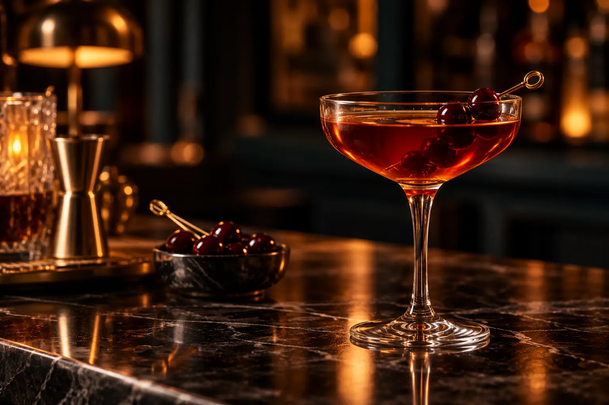
Мохито с мятой и льдом на барной стойке
Авторство: Фотография предоставлена пользователем; автор не указан. Условия: Предоставлено пользователем для оформления сайта.
Обработанный исходник: 1536 × 1024 пикселей.
Большая версия сайта: 1536 × 1024 пикселей.
Файл заменён пользователем через GitHub; подготовлена уменьшенная мобильная версия без увеличения разрешения.
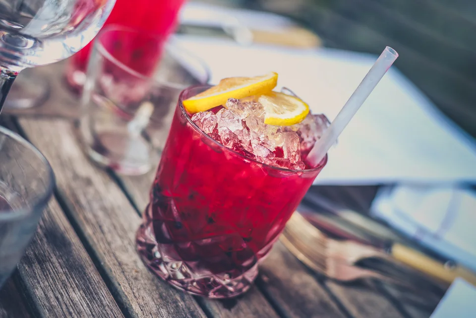
Вариант подачи красного коктейля с цитрусом
Авторство: Jez Timms jeztimms. Условия: CC0.
Оригинал фотографии: 5313 × 3547 пикселей.
Большая версия сайта: 3840 × 2564 пикселей.
WebP-конверсия и уменьшение без увеличения исходника; адаптивное кадрирование при показе.
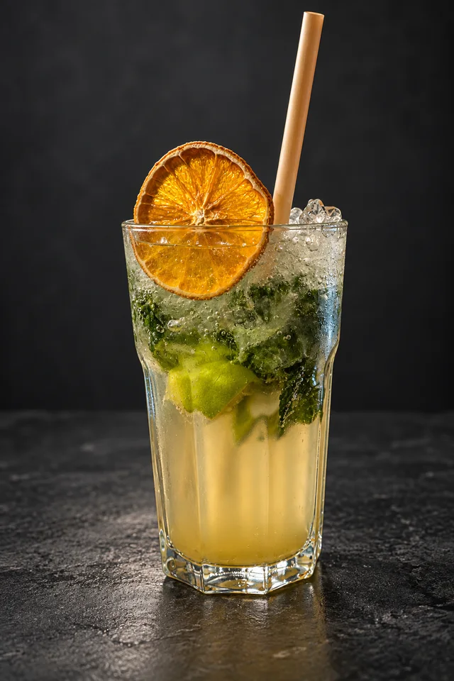
Безалкогольный коктейль с мятой и цитрусом — вариант подачи
Авторство: Andy Li. Условия: CC0.
Оригинал фотографии: 8160 × 6144 пикселей.
Обработанный мастер: 1024 × 1536 пикселей.
Большая версия сайта: 1024 × 1536 пикселей.
Фон с людьми и интерьером очищен генеративным редактором; сохранена фотографическая подача напитка.
Домашний лимонад в высоком бокале
Авторство: Andy Li. Условия: CC0.
Оригинал фотографии: 6144 × 8160 пикселей.
Большая версия сайта: 2891 × 3840 пикселей.
WebP-конверсия и уменьшение без увеличения исходника; адаптивное кадрирование при показе.
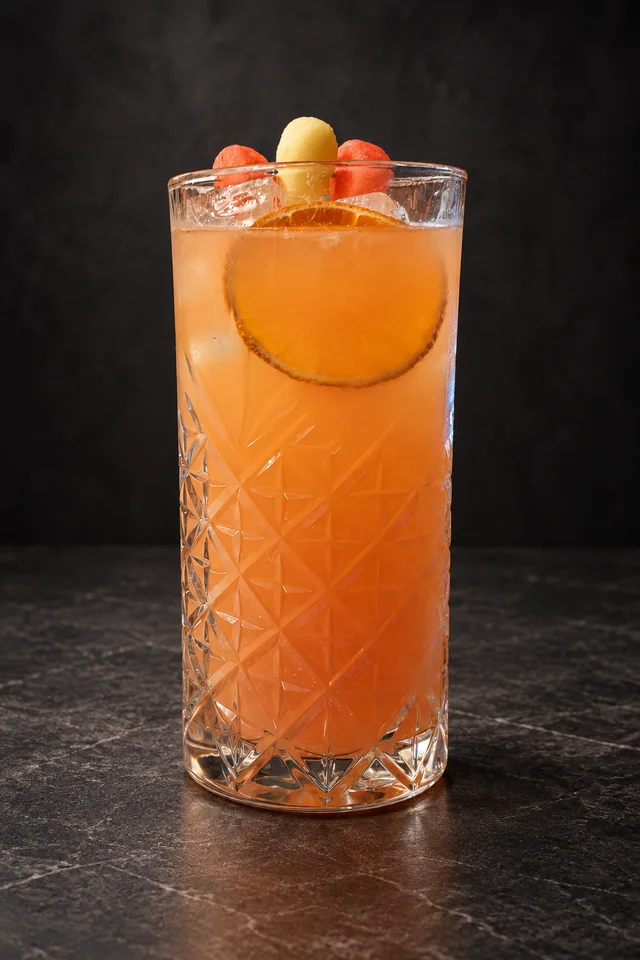
Ягодно-цитрусовый моктейль — вариант подачи
Авторство: Andy Li. Условия: CC0.
Оригинал фотографии: 8160 × 6144 пикселей.
Обработанный мастер: 1024 × 1536 пикселей.
Большая версия сайта: 1024 × 1536 пикселей.
Фон с людьми и интерьером очищен генеративным редактором; сохранена фотографическая подача напитка.
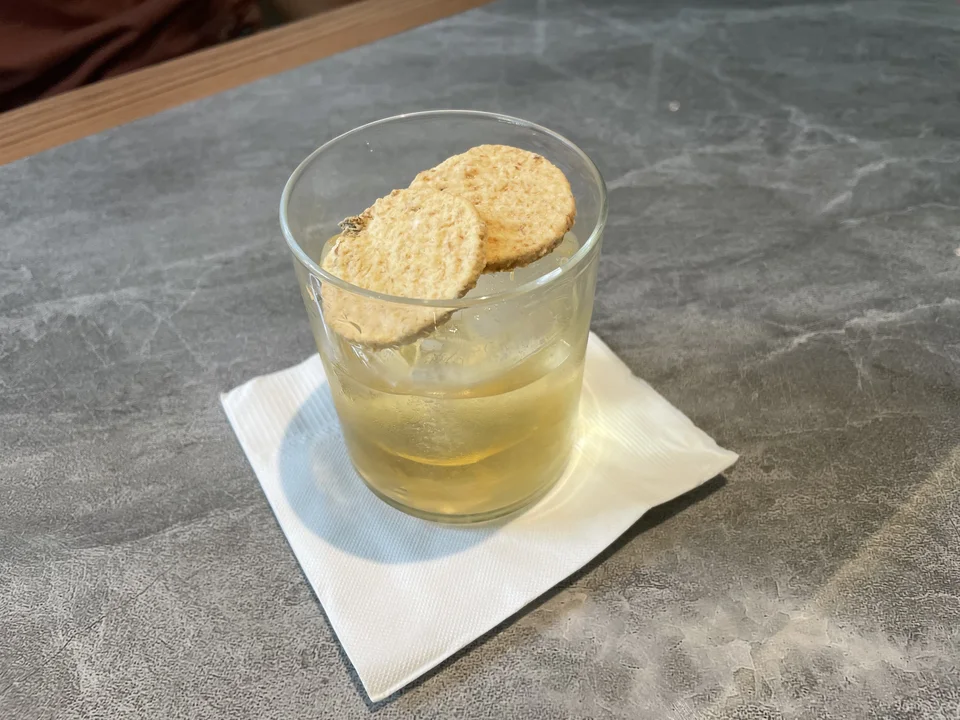
Коктейль Wingko Babat Negroni
Авторство: Candramawa99. Условия: CC BY 4.0.
Оригинал фотографии: 4032 × 3024 пикселей.
Большая версия сайта: 3840 × 2880 пикселей.
WebP-конверсия и уменьшение без увеличения исходника; адаптивное кадрирование при показе.
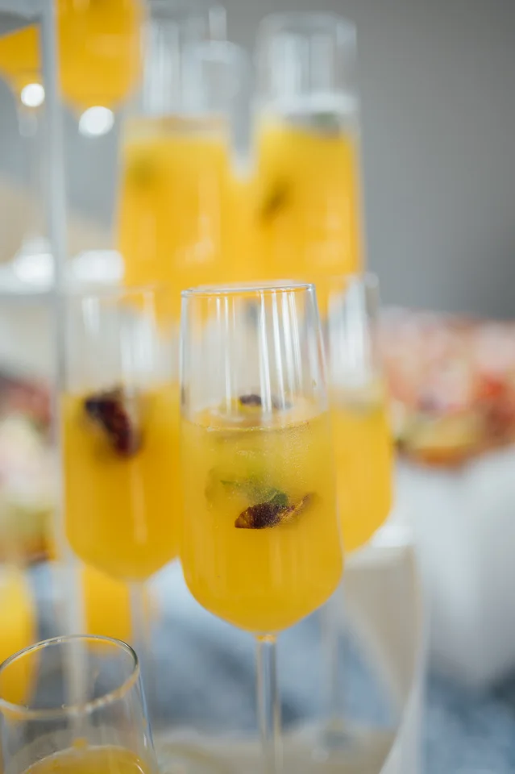
Ряд бокалов с жёлтыми коктейлями и фруктовыми гарнирами
Авторство: Shixart1985. Условия: CC BY 2.0.
Оригинал фотографии: 4024 × 6048 пикселей.
Большая версия сайта: 2555 × 3840 пикселей.
WebP-конверсия и уменьшение без увеличения исходника; адаптивное кадрирование при показе.
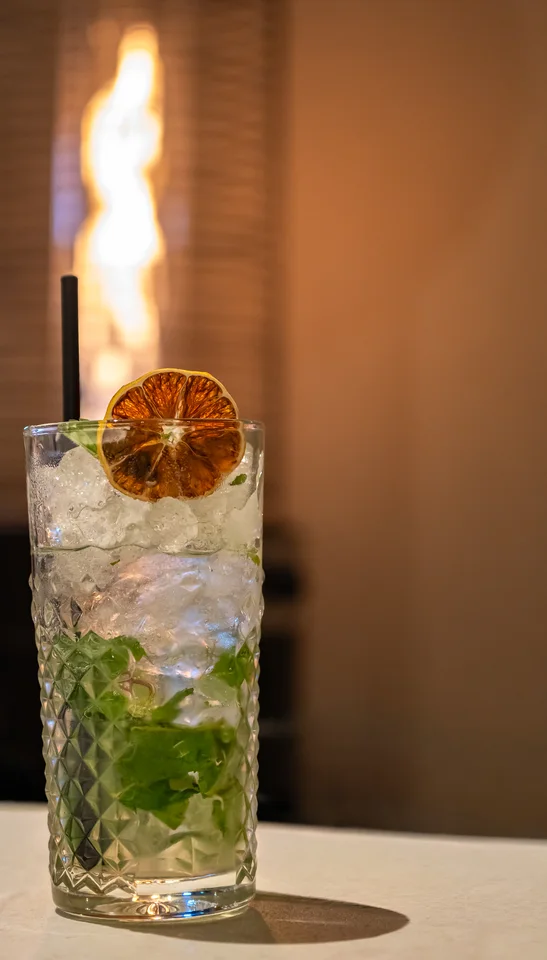
Подача коктейля Fresh Mojito Premium
Авторство: Rjcastillo. Условия: CC BY-SA 4.0.
Оригинал фотографии: 4494 × 6741 пикселей.
Большая версия сайта: 2190 × 3840 пикселей.
Кадрирование и WebP-конверсия; уменьшение без увеличения исходника.
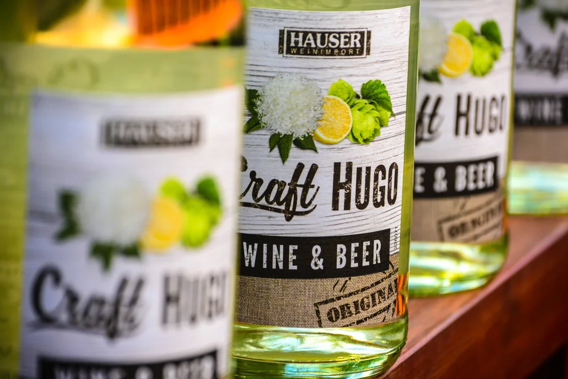
Бутылки напитка Hugo с цитрусовыми этикетками
Авторство: Oliver Mussiett. Условия: CC0.
Оригинал фотографии: 6000 × 4000 пикселей.
Большая версия сайта: 3840 × 2560 пикселей.
WebP-конверсия и уменьшение без увеличения исходника; адаптивное кадрирование при показе.
Малиновый лимонад с мятой и льдом
Авторство: Artem Beliaikin from Moscow, Russia. Условия: CC0.
Оригинал фотографии: 4000 × 6000 пикселей.
Большая версия сайта: 2560 × 3840 пикселей.
WebP-конверсия и уменьшение без увеличения исходника; адаптивное кадрирование при показе.
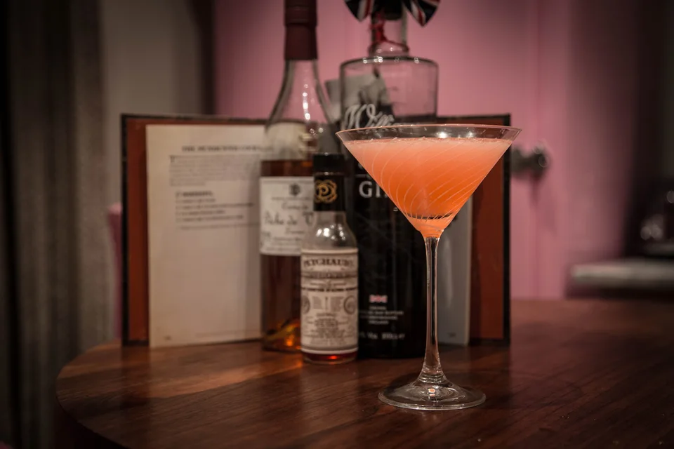
Коктейль Pendennis Club с бутылками ингредиентов
Авторство: Adrian Scottow. Условия: CC BY-SA 2.0.
Оригинал фотографии: 5472 × 3648 пикселей.
Большая версия сайта: 3840 × 2560 пикселей.
WebP-конверсия и уменьшение без увеличения исходника; адаптивное кадрирование при показе.
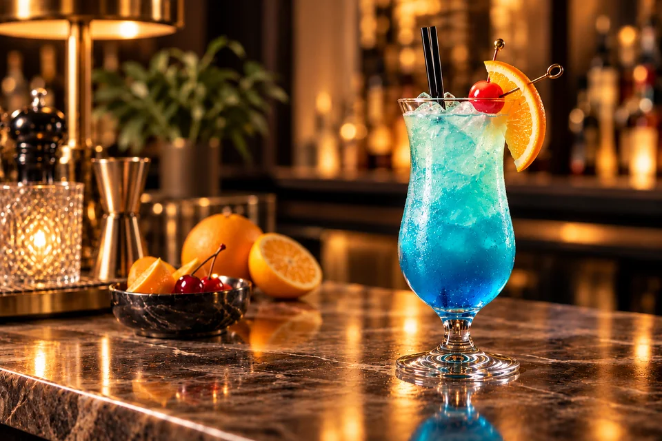
Голубой коктейль в бокале харрикейн с апельсином и вишней на тёплой барной стойке
Авторство: Изображение предоставлено пользователем; фотографическая версия подготовлена ImageGen. Условия: Предоставлено пользователем для оформления сайта.
Обработанный исходник: 1536 × 1024 пикселей.
Обработанный мастер: 1536 × 1024 пикселей.
Большая версия сайта: 1536 × 1024 пикселей.
По изображению пользователя подготовлена фотографическая веб-версия без людей и текста; веб-файлы не увеличены выше разрешения мастера.
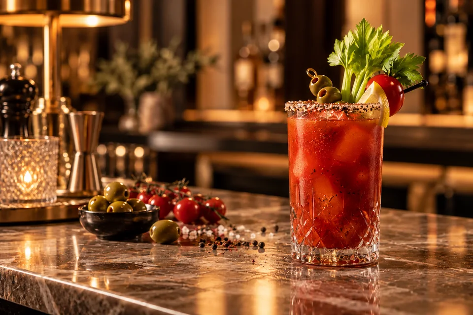
Кровавая Мэри в высоком хрустальном бокале с сельдереем, оливками и лимоном
Авторство: Изображение предоставлено пользователем; фотографическая версия подготовлена ImageGen. Условия: Предоставлено пользователем для оформления сайта.
Обработанный исходник: 1536 × 1024 пикселей.
Обработанный мастер: 1536 × 1024 пикселей.
Большая версия сайта: 1536 × 1024 пикселей.
По изображению пользователя подготовлена фотографическая веб-версия без людей и текста; веб-файлы не увеличены выше разрешения мастера.